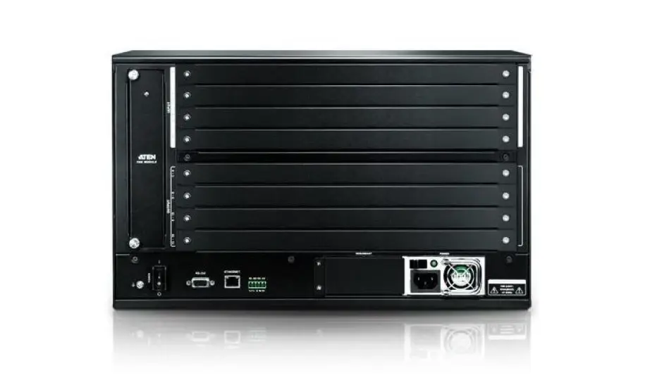

Коммутационное оборудование
Спектр коммутационной продукции ATEN охватывает презентационные и матричные коммутаторы, а также маршрутизаторы. Презентационные коммутаторы востребованы в корпоративной среде для быстрого переключения сигналов различных форматов и вывода их на экран. Матричные коммутаторы и маршрутизаторы позволяют перенаправить сигнал с одного из входных устройств, на одно или несколько выходных. Коммутационное оборудование ATEN применяется в Digital Signage для вывода рекламного конента, в залах совещаний, в студиях и концертных залах и многих других сферах.